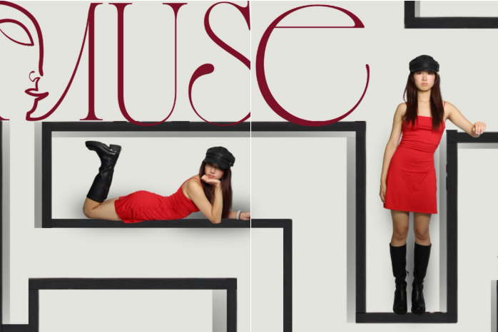
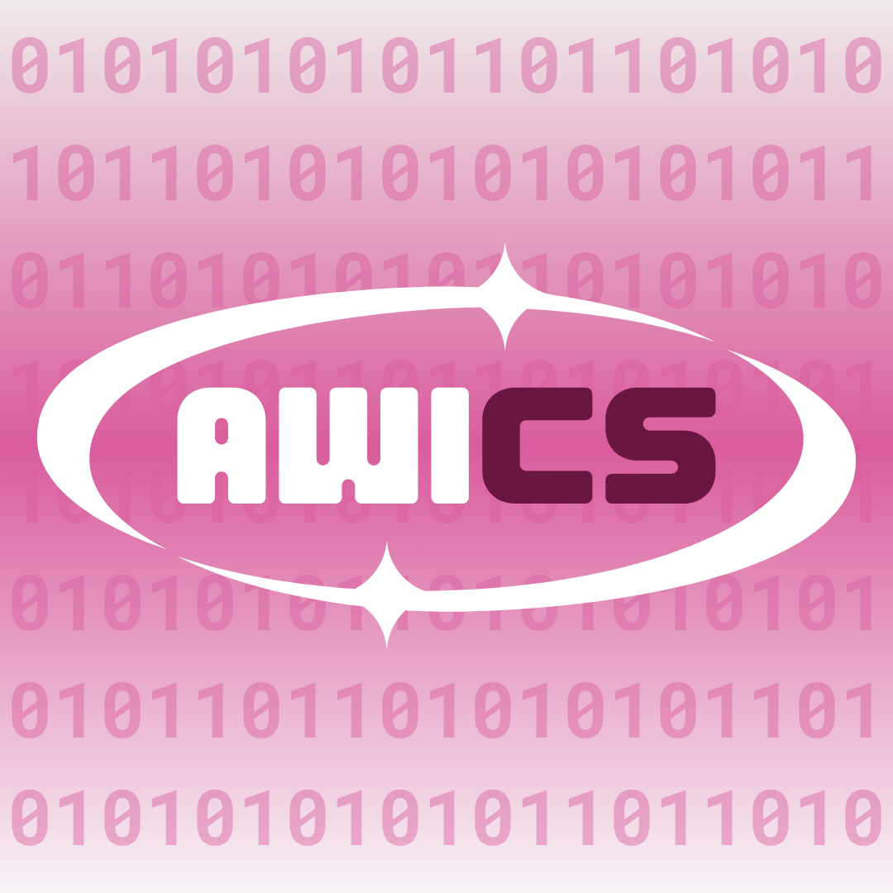

ACTIVITIES

A-Line Magazine - Editor
A-Line Magazine is Texas A&M University’s first student-led editorial publication. We release online articles on a week-to-week basis as well as a semesterly print issue. Our mission is to enkindle the human spirit through self-expression and embolden all to excel beyond social norms.
As one of four editors, I work with an executive team of photographers, stylists, graphic designers, digital media specialists, and event coordinators to run the organization. We run recruitment through social media outreach, banners, tables, and presentations, as well as work on the behind-the-scenes of our print issue and plan our weekly meetings.
As part of the editing team, I review articles written by over 14 staff writers who rely on us to deliver their best work. We determine the content creation timeline and prepare article pitches to present every Monday for our weekly meetings. We also design and maintain the official A-Line website, updating it for each magazine release. In fact, I personally take care of the more technical side of our website, including coding our model catalog database & claims system!
You can take a look at our past print issues on our website! You can find my writing in our two most recent issues!
Aggie Women in Computer Science - Marketing Director

Aggie Women in Computer Science (AWICS) is a Texas A&M University organization that aims to bring together and empower a community of women in STEM. AWICS is a chapter of the Association of Computing Machinery on Women in Computing (ACM-W).
As marketing director, I coordinate outreach and engagement for the organization, including running our official Instagram page and beginning-of-semester recruitment. I plan content advertising the organization through both digital and physical signage, as well as preparing our logo and overall branding.
Marketing is also responsible for coordinating the official merchandise distribution and storefront for the Texas A&M Department of Computer Science. Every fall semester, we design merchandise, typically clothing, featuring the Department of Computer Science’s official logo.